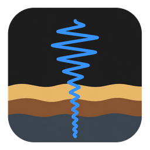
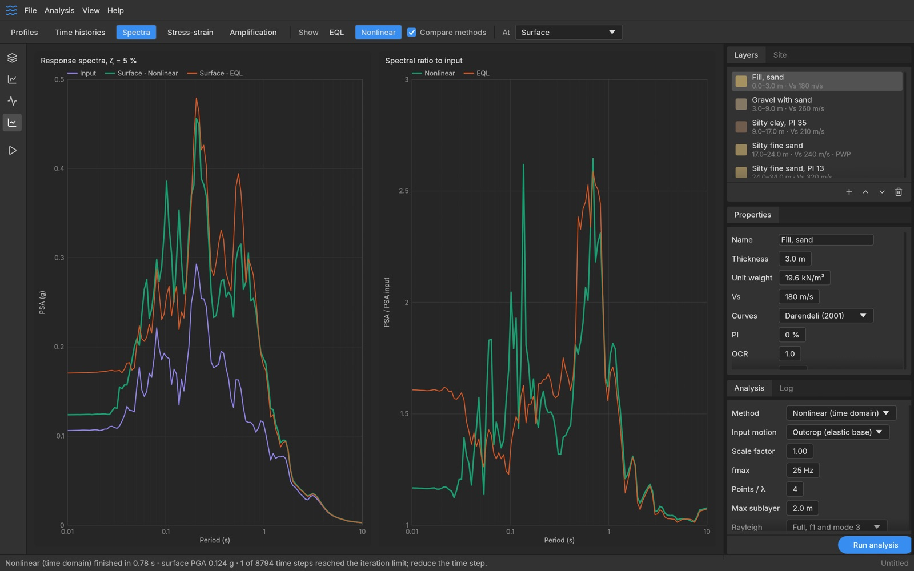

Two solvers
Frequency-domain linear and equivalent-linear analysis as in SHAKE91, and a time-domain lumped-mass solver with Newmark integration and full Newton iterations as in D-MOD2000.

MotusFreeware · open source · v0.1.0
Motus propagates earthquake shaking up through a layered soil column. It combines a SHAKE-type equivalent-linear solver with a D-MOD-type nonlinear effective-stress solver, and every action in its window is also a Model Context Protocol tool that an AI agent can call.
MIT / Apache-2.0 · no account, no licence key, no telemetry
Features
Build the column, pick the curves, fit the input motion to a design spectrum, run linear, equivalent-linear and nonlinear analyses side by side, and read the results without leaving the window.
Frequency-domain linear and equivalent-linear analysis as in SHAKE91, and a time-domain lumped-mass solver with Newmark integration and full Newton iterations as in D-MOD2000.
MKZ and strength-bounded GQ/H backbones with extended Masing rules, and the Phillips–Hashash reduction factor so loops reproduce the target damping.
Dobry–Matasović pore-pressure generation in sands, Matasović–Vucetic cyclic degradation in clays, and dissipation through the column during and after shaking.
ASCE 7 and Eurocode 8 target spectra, amplitude scaling, frequency-domain spectral matching with baseline correction, PEER records or Boore stochastic motions.
Many motions on velocity profiles randomised with Toro (1995), summarised as lognormal medians and σln, run in parallel on every core.
Seismic coefficient and Newmark sliding displacement for dams, embankments and landfills, Boulanger–Idriss liquefaction triggering, displacement profiles and CSV export.
Inside the solver
Each sublayer follows a backbone curve and Masing unload–reload rules. Larger cycles mobilise lower stiffness and more damping, which is what the nonlinear solver tracks cycle by cycle.

Validation
Motus solves the published example problems of other programs with only the inputs stated in their manuals, and predicts earthquakes recorded at a downhole array. Numbers are from the accompanying paper.
Bar length on a 0–5 % scale.
Viscous damping calibrated on one earthquake, then five other earthquakes (M 3.6–7.1) predicted without change. RMS log residual of surface spectra, 0.02–2 s:
All six records are weak motions, so this tests small-strain behaviour. Validate pore-pressure and clay parameters against cyclic tests on your own soil before design.
Agents
The assistant inside the window and outside agents such as Claude Code use the same 26 tools, which run through the same code paths as the menus, so you watch every change appear on screen. The listener accepts local connections only and can be switched off.
claude mcp add motus -- /path/to/motus --mcpDownload
Motus is freeware under MIT or Apache-2.0: use it for teaching, research and commercial design work. No account, no licence key, no telemetry.
Any platform with Rust 1.80 or newer:
cargo build --release
./target/release/motus # the window, with the example site
./target/release/motus-cli --run site.motus nl out/ # solve without the windowThe macOS build is universal (Apple silicon and Intel) but not notarised, so on first launch right-click the app and choose Open. The Windows build is not code-signed, so SmartScreen may warn on first launch: choose More info, then Run anyway. Pore-pressure and clay-degradation defaults are placeholders that must be calibrated for your soil.